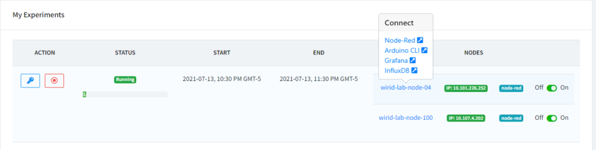
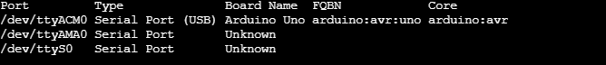
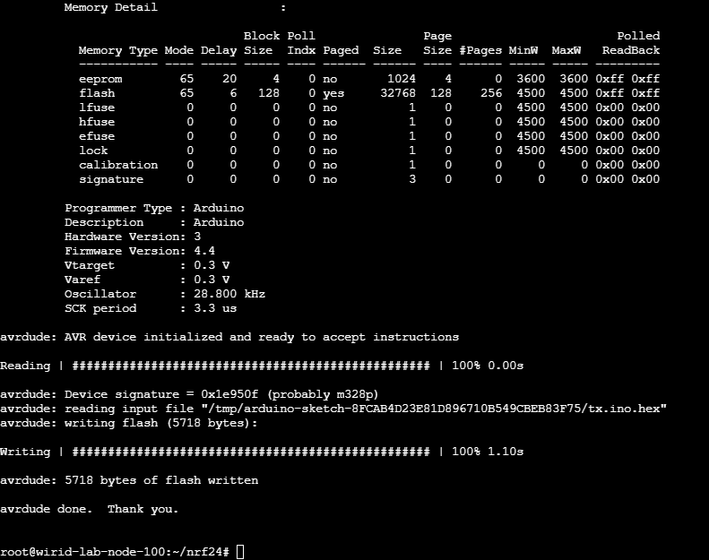
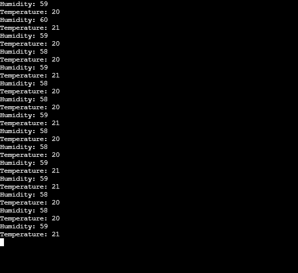
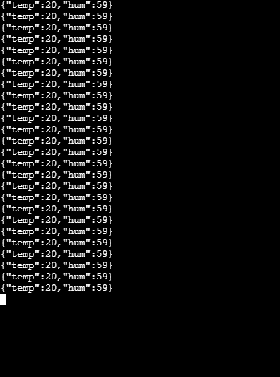
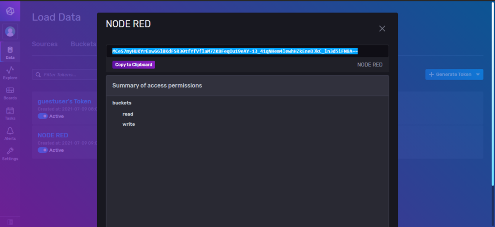
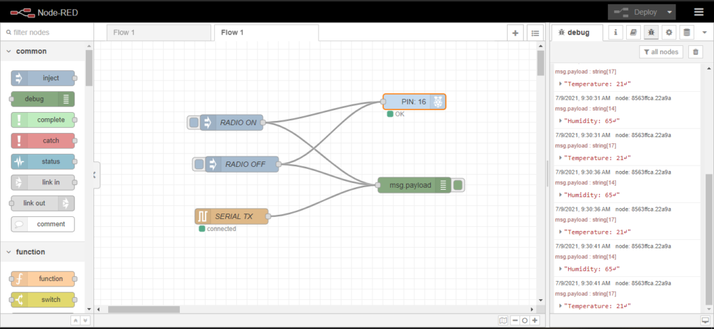
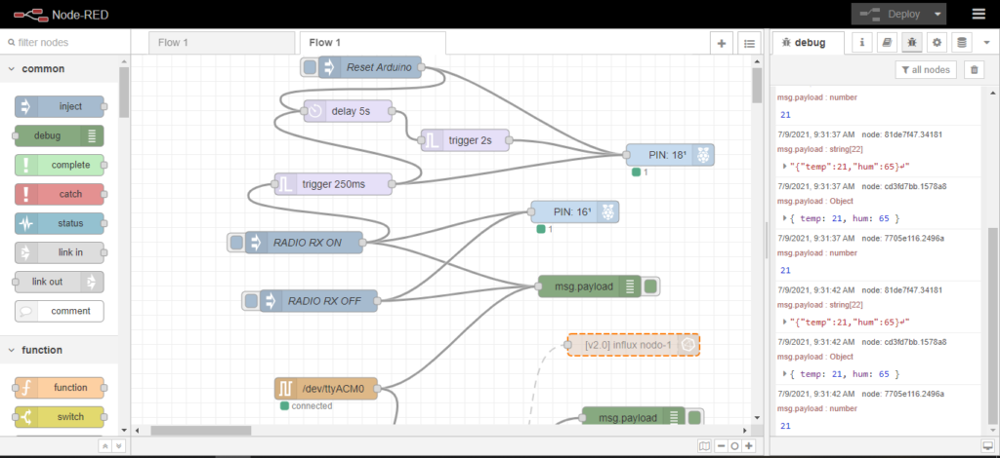
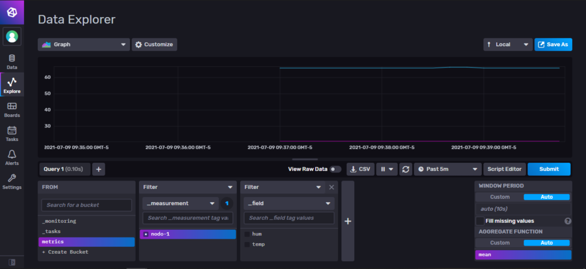
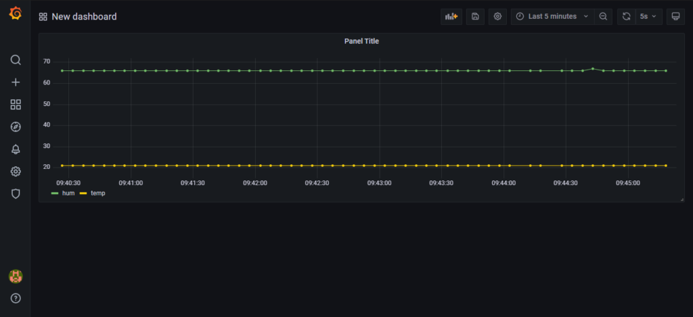

Introducción:
En el siguiente experimento se mostrará el paso a paso de cómo realizar la comunicación entre dos nodos IoT del laboratorio mediante los módulos NRF24L01 para almacenar los datos de temperatura y humedad utilizando la programación en bloques de node-red, almacenar los datos en InfluxDB y finalmente reportar en tiempo real con Grafana.
Por otro lado el objetivo de este experimento es utilizar las capacidades que tienen los nodos para reprogramar las tarjetas Arduino y así mismo configurar los módulos RF como transmisor o receptor y enviar los datos mediante comunicación serial para ser procesada en node-red.
Para este ejemplo vamos a crear un experimento con los wirid-lab-node-40 (Nodo RX) y wirid-lab-node-100 (Nodo TX)
Aplicaciones utilizadas en este experimento
Una vez creada las reservas, en cada nodo se podrá acceder a las siguiente aplicaciones:
- Arduino-cli mediante interfaz web ssh (Contraseña: Token de la reserva)
- Node-red
- InfluxDB 2.0 (Usuario: guestuser Contraseña: Token de la reserva)
- Grafana (Usuario: admin Contraseña: admin)
Para acceder basta con hacer clic en el nombre del nodo y a continuación se mostrará la lista de posibles accesos a sus aplicaciones.

Diagrama de Conexión del Nodo

Configuración Arduino Uno
Los códigos a configurar en cada nodo se encuentran en el repositorio https://github.com/wirid-lab/nrf24 con la siguiente distribución:
rx |--rx.ino tx |--tx.ino rx-flow.json tx-flow.json
Se encuentran dos proyectos de Arduino (rx y tx) en carpetas separadas que contienen los códigos para compilar en los Arduino UNO de cada nodo. Luego se encuentran dos archivos con el nombre xx-flow.json, Estos corresponden a los diagramas de flujo para implementarlos en Node-red.
Compilar Programa Arduino en wirid-lab-node-100 (Nodo TX)
Con la reserva del nodo en ejecución, se procede a entrar a la aplicación Arduino-CLI desde el navegador. Se ingresa el token como contraseña en la interfaz web SSH. Luego
se ingresan los siguientes comandos para instalar las librerías del módulo RF y el sensor DHT.
arduino-cli lib install "RF24" && \ arduino-cli lib install "DHT sensor library" && \ arduino-cli lib install "Adafruit Unified Sensor"
En la siguiente figura se muestra el proceso de instalación de las librerías mencionadas dentro de la aplicación Arduino-CLI.

Una vez instaladas las librerías, proceder a clonar el repositorio creado en github e ingresar a la carpeta creada utilizando los siguientes comandos:
git clone https://github.com/wirid-lab/nrf24 cd nrf24
Para validar el puerto de conexión y el tipo de tarjeta Arduino utilizada en el nodo ingresar el siguiente comando:
arduino-cli board list
Inmediatamente se mostrará una lista con las tarjetas disponibles

Una vez se valida la tarjeta conectada en el nodo, se procede a compilar y cargar el programa de transmisión al nodo, mediante el siguiente comando:
arduino-cli compile -u -v -p /dev/ttyACM0 -b arduino:avr:uno tx
Este proceso tomará un tiempo para compilar y cargar el programa en la tarjeta Arduino, una vez finalice el proceso se mostrará el resultado como en la siguiente figura

El programa cargado en la tarjeta Arduino se encarga de leer los valores del sensor DHT11, este valor es almacenado en dos variables que son enviadas mediante el módulo RF y al mismo tiempo enviadas por puerto Serial para comprobar la lectura de dichos sensores. Si quiere conocer el código implementado dirigirse a https://github.com/wirid-lab/nrf24/blob/main/tx/tx.ino
Para revisar el correcto funcionamiento desde el terminal, basta con instalar la herramienta screen y acceder a los datos enviado por Serial utilizando los siguientes comandos:
apt install -y screen screen /dev/ttyACM0 9600

| Para salir de la pantalla utilizar la combinación de teclas CTR + A + K |
Compilar Programa Arduino en wirid-lab-node-100 (Nodo TX)
Se ingresa al nodo 04 al terminal SSH de la aplicación Arduino-CLI para realizar las configuraciones respectivas para recibir los datos del modulo RF, para ello se debe utilizar los mismos pasos de instalación de librerías, descargar repositorio, verificar la tarjeta y puerto Arduino conectada al nodo y compilar el programa mediante los siguientes comandos:
arduino-cli lib install "RF24" && \ arduino-cli lib install "DHT sensor library" && \ arduino-cli lib install "Adafruit Unified Sensor" git clone https://github.com/wirid-lab/nrf24 cd nrf24 arduino-cli board list arduino-cli compile -u -v -p /dev/ttyACM0 -b arduino:avr:uno rx apt install -y screen screen /dev/ttyACM0 9600

Los datos mostrados en el receptor vienen codificados en formato JSON, este formato se utilizará para almacenar las variables y valores en InfluxDB.
Almacenamiento en InfluxDB
Para hacer uso del almacenamiento de los datos recibidos en el prototipo se utiliza la herramienta InfluxDB en la versión 2.0. Para integrar esta herramienta con node-red se necesita acceder al panel de control donde el usuario es guestuser y la contraseña será el token generado por el laboratorio. Una vez se ingresa al dashborard, basta con crear un token como se muestra en la siguiente figura.

Implementación node-red
Para la visualización de los datos recibidos por el Arduino mediante comunicación serial se realizó la creación de diferentes flujos de trabajo. Dentro en el repositorio https://github.com/wirid-lab/nrf24se encuentran dos archivos (tx-flow.json y rx-flow.json) que corresponden al procesamiento de los datos en el nodo receptor y en el nodo transmisor.
Nodo Transmisor
En la siguiente figura se observa el diagrama de flujo utilizado para el nodo transmisor (wirid-lab-node-04) donde los datos recibidos por el Arduino se muestran en la pestaña de logs dentro de la aplicación. Así mismo se integró dentro de este flujo la opción de encender o apagar el módulo RF utilizando el pin16 de la RPi3 para activar o desactivar el Mosfet Irf520.

Nodo Receptor
El flujo del nodo receptor se muestra en la siguiente figura:

Este diagrama permite tener reiniciar el Arduino utilizando el pin reset que se encuentra conectado al pin 18 de la RPi3. También se tiene la opción de encender o
apagar el módulo RF para dejar de recibir los datos del nodo TX. Al deshabilitar el modulo RF y volverlo a activar implica que la RPI debe volver a reiniciarse ya que debe establecer nuevamente conexión con el módulo RF.
Finalmente se encuentran los bloques para conectar con el puerto serie y recibir los datos del Arduino para mostrarlos en la interfaz propia de node-red y almacenarlos en influxDB.
Reporte datos en Grafana
Para graficar los datos almacenados del nodo receptor en la base de datos InfluxDB y reportar en tiempo real se utiliza la herramienta Grafana. Esta herramienta logra conectarse
directamente con la base de datos y realizar las peticiones necesarias para extraer la información de cada medición.
Para abrir la herramienta basta con acceder al link generado en la reserva donde el usuario y contraseña. Una vez dentro de la herramienta se necesita agregar la base de datos en la sección datasource, tal como se muestra en la siguiente figura. Los datos de acceso es el nombre de la organización my-org y el token generado en InfluxDB

Una vez se guarda esta fuente de datos, grafana automáticamente realiza la prueba de conexión indicando si es posible conectarse a InfluxDB.
Cuando el diagrama de flujo del nodo receptor se encuentra en ejecución y almacenando los datos en InfluxDB se pueden dirigir al dashboard de InfluxDB y en la sección explore se pueden revisar los datos enviados del nodo y una gráfica que reporta los datos seleccionados. Para tener esta misma gráfica en grafana, haga clic en el botón Scrip Editor y podrá copiar el query de la consulta.

Ir a la aplicación grafana y crear un nuevo panel para mostrar los datos de temperatura y humedad que reporta el nodo transmisor, en este panel puede seleccionar el tiempo de intervalo de refresco de la gráfica y filtrarlo por un rango de fechas.

Video Tutorial
{kind=link}
{kind=link}
{kind=link}